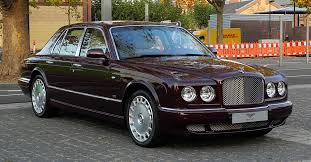

Modell: Bentley 3 Litre
Baujahr: 1921-1929
Produktionsstückzahl: 1,620
Motor: 4-Zylinder, 3.0L
Leistung: 80 PS
Höchstgeschwindigkeit: 130 km/h
Modell: Bentley Speed Six
Baujahr: 1928-1930
Produktionsstückzahl: 1,400+
Motor: 6-Zylinder, 6.5L
Leistung: 180 PS
Höchstgeschwindigkeit: 160 km/h
Modell: Bentley Mark VI
Baujahr: 1946-1952
Produktionsstückzahl: 5,200+
Motor: 6-Zylinder, 4.25L
Leistung: 140 PS
Höchstgeschwindigkeit: 160 km/h
Modell: Bentley Continental R
Baujahr: 1991-2003
Produktionsstückzahl: 1,100+
Motor: V8, 6.75L
Leistung: 400 PS
Höchstgeschwindigkeit: 250 km/h

Modell: Bentley Arnage
Baujahr: 1998-2009
Produktionsstückzahl: 1,500+
Motor: V8, 6.75L
Leistung: 400 PS
Höchstgeschwindigkeit: 240 km/h